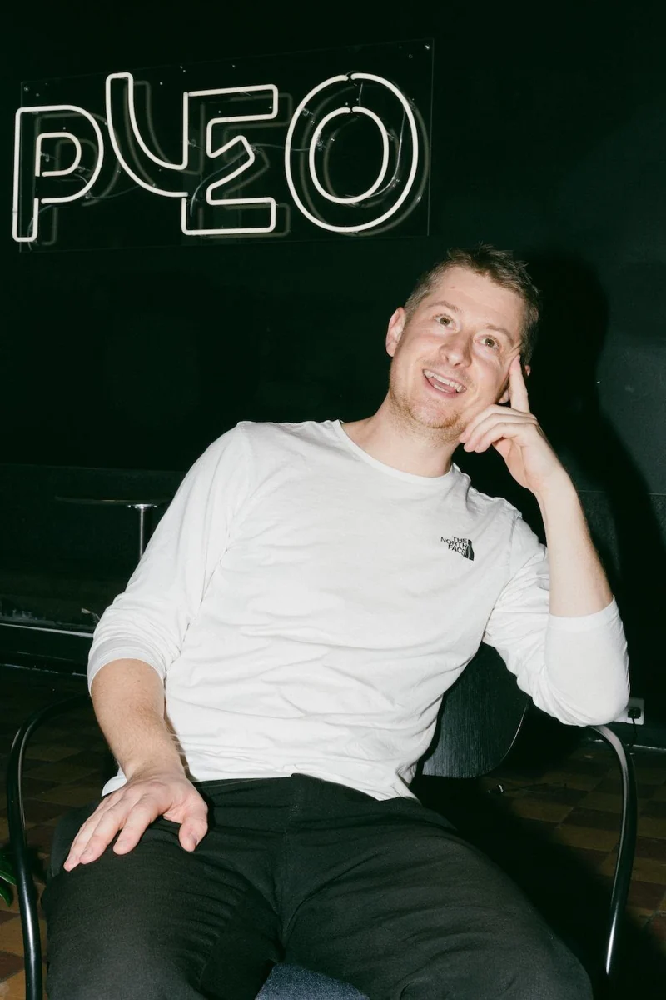

About me
I’ve worked in B2B SaaS start-ups and scale-ups since 2017, and twice I was the first product marketing hire. My favourite place is between thinking and making: finding the story in a product, then writing the website, scripting the video and training the team that sells it, together with the people who build it.
Next, I’m looking for a senior role in Copenhagen where positioning, campaigns and close collaboration with the people the work is for sit at the centre.

Reshape BiotechMar 2024 → Oct 2026
Senior Product Marketing ManagerFirst product marketing hire. Ran the launch framework, and built the enablement hub, the onboarding programme and a pricing tool for sales that replaced a paid one.
Veo Technologies2022 → 2023
Senior Product Marketing ManagerFirst product marketing hire. Surveyed 300 coaches on how they used Veo and fed the findings into positioning.
Pleo2017 → 2022
Business development → Partnerships → Field marketing → Product marketingFour roles as the company grew from ~20 to ~1,000 people. Danish marketing and PR, the first sales development team, and the UK relaunch of Pleo Invoices.
Cykelven Privat2015 → 2017
Managing directorMobile bike workshops that employed and trained young people from vulnerable backgrounds. Ran daily operations and sales to companies.
EducationMSc Finance and Strategic Management, CBS · 2011 → 2014BSc Business Administration, CBS · 2008 → 2011Product Marketing Minidegree, CXL · 2023
SkillsPositioning · Launches · Sales enablement · Onboarding · Video scripts · Landing pages · Press relations
ToolsHubSpot · Intercom · Webflow · Notion · Figma · Lovable · Claude